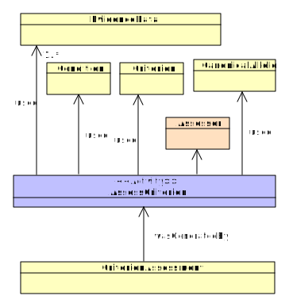

AssessCriterion
*TODO* short description needed
Descended from Activity
Scope and Usage
Interpretations are generated through a formal process of assessing pre-defined criteria in light of evidence. In the ACMG Variant Pathogenictiy process, these Criteria correspond to the individual rules such as PM2 or BS1. The AssessCriterion activity represents the process of applying evidence to determine whether such a criterion applies to a given variant and condition. The AssessCriterion uses EvidenceData and a Criterion to generate a CriterionAssessment, which contains the results of the activity, i.e. the decision about whether the criteria applies.
Attributes
| Name | Type | Cardinality | Description |
|---|---|---|---|
| assessor | Agent | 1..n | |
| usedCriterion | Criterion | 1..1 | Criterion (rule) to which the evidence has been applied |
| usedCanonicalAllele | CanonicalAllele | 1..1 | The allele that is being assessed with the criterion |
| usedEvidenceData | EvidenceData | 0..* | Data that been used in the activity |
Inherited Attributes
| Name | Type | Cardinality | Inherited From | Description |
|---|---|---|---|---|
| activityEntityId | Entity | 1..1 | Activity | |
| startedAtTime | Datetime | 0..1 | Activity | A human-readable description of the reasoning behind the interpretation |
| endedAtTime | Datetime | 0..1 | Activity | |
| wasAssociatedWith | Agent | 0..* | Activity | The Agent that performed the Activity |